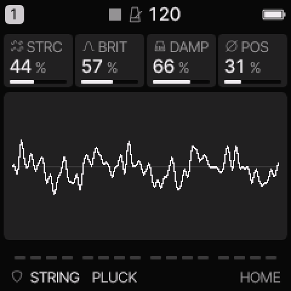
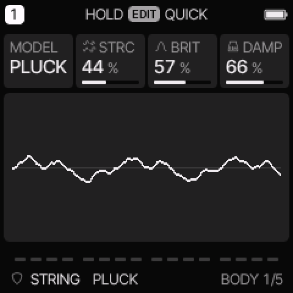
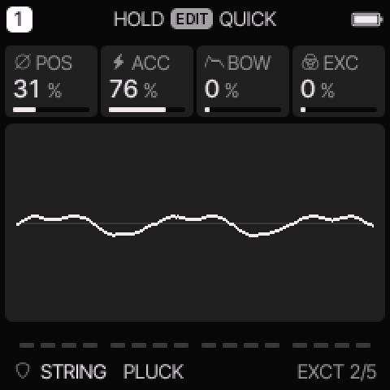
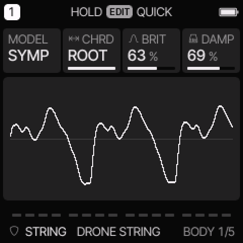
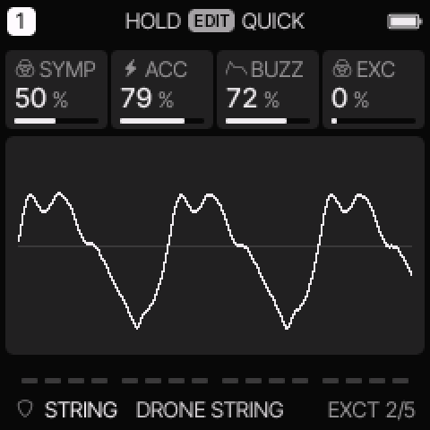

STRING engine
All engines · Modes and shared controls
Use STRING for plucked strings, stiff or buzzing strings, sympathetic resonance, and sustained string textures.
How the sound is made
A short excitation starts a simulated string. The string and its loop filters produce the decay. SYMP adds three sympathetic strings. The common amplitude envelope still controls the final note.

STRING on HOME. These knobs apply to the selected track unless HOME LEVELS is enabled.
HOME knobs
| Knob 1 |
Knob 2 |
Knob 3 |
Knob 4 |
| STRC / CHRD |
BRIT |
DAMP |
POS / SYMP |
For HOME LEVELS, see HOME and mixer.
Engine controls
Press the panel EDIT button to cycle the engine pages.
Pause between presses to avoid opening its shortcut layer.
The musical EDIT key is a different control.
BODY page

BODY is engine page 1.
| Control |
What it changes |
| MODEL |
Select PLUCK or SYMP. |
| STRC / CHRD |
PLUCK: change bridge behavior and string stiffness. SYMP: choose the sympathetic tuning group. |
| BRIT |
Set excitation brightness and the string loop tone. |
| DAMP |
Set the model decay. Higher values ring longer, despite the DAMP label. |
EXCT page

EXCT is engine page 2.
| Control |
What it changes |
| POS / SYMP |
PLUCK: set pluck position. SYMP: set coupling into the sympathetic strings. |
| ACC |
Set how much velocity strengthens and brightens the excitation. |
| BOW / BUZZ |
PLUCK: add repeated excitation for a sustained texture. SYMP: increase bridge buzz. |
| EXC |
Mix the direct pick or excitation signal into the output. |
PLUCK and SYMP
In PLUCK, low STRC values give a curved, buzzing bridge response.
Higher values add stiff-string dispersion. POS changes the pluck's harmonic balance.
BOW sustains the model with repeated random excitation. It is not a recorded bowed instrument.
In SYMP, several labels change on the device:
| PLUCK label |
SYMP label |
New function |
| STRC |
CHRD |
Tune the sympathetic strings: OCT, 5TH, 4TH, MAJ, MIN, SUS, 7TH, or ROOT. |
| POS |
SYMP |
Change sympathetic coupling. |
| BOW |
BUZZ |
Change the bridge buzz. |
ROOT uses the track's scale root with its fifth and octave.
These sympathetic pitches belong to one modelled voice; they are separate from chord-key note entry.
Keep common SUS high if you want to hear the string's natural decay.
Use REL or a row gate to stop a long ring.

SYMP changes STRC into CHRD.

SYMP also changes POS into SYMP and BOW into BUZZ.
Try these changes
Make a dry pluck
Load CLAVI PLUCK. Keep BOW at zero. Change POS, then reduce DAMP for a shorter model decay. Compare soft and hard notes.
Hear sympathetic resonance
Load HARP. Compare CHRD choices while holding one note. Raise SYMP gradually. Use ROOT if you want resonance related to the track root.
Factory presets
PLUCK, DRONE STRING, HARP, KOTO PICK, SITAR BUZZ, ZITHER, CLAVI PLUCK, BOWED WIRE.
See the inspired preset catalogue for the references behind the newer sounds.
Limits and useful checks
STRING has at most three voices per track and shares the total eight-voice budget. Long decays can use those voices quickly. The models synthesize the strings; they do not play instrument samples.
Save a user preset or project before loading another sound if you want to keep your edits.